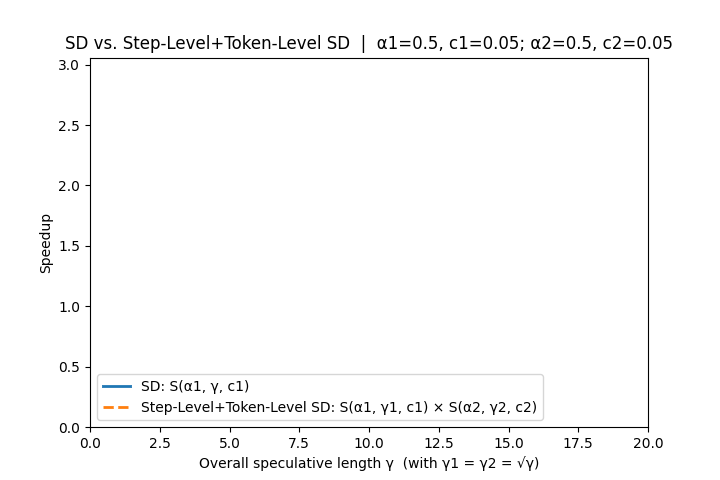
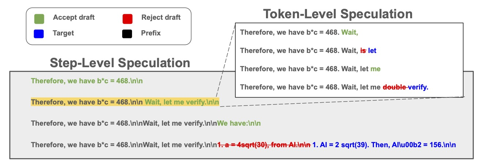
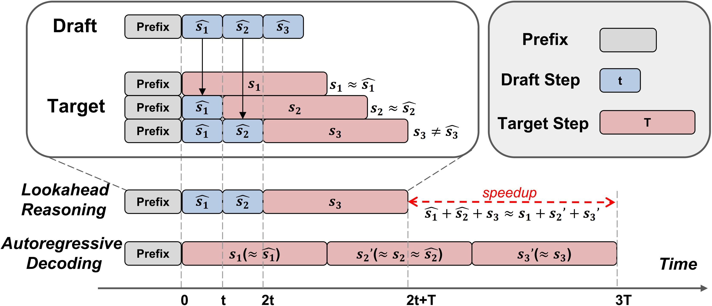
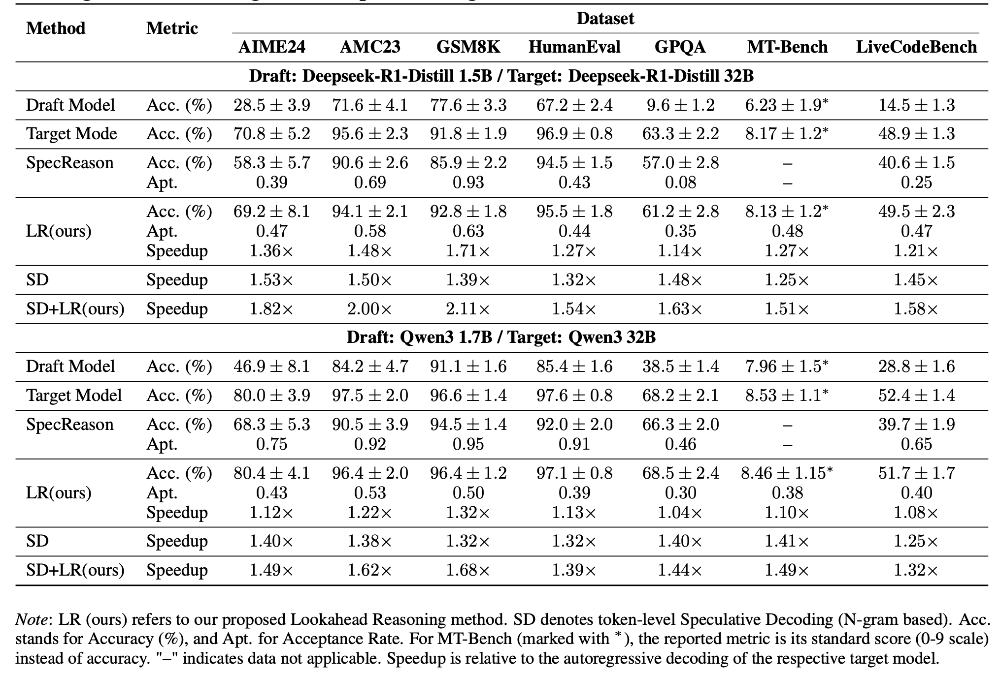

Background: Speedup of Speculative Decoding Is Upper-Bounded
LLM inference is historically autoregressive and sequential. Each new token depends on all the tokens before it. This makes it hard to run in parallel, so a lot of GPU compute is left unused. Speculative decoding (SD) helps a little: a small drafter guesses a few future tokens, and the large model checks them in parallel. In other words, SD uses extra FLOPs to save some sequential steps. At the same time, GPUs keep getting much faster. For example, NVIDIA’s H200, B200, and Rubin chips bring huge jumps in peak FLOPs. It is natural to think that giving more FLOPs to SD should keep making inference faster.
But in reality, token-level SD quickly hits limits. It only works well if a whole block of drafted tokens is correct. Longer drafts usually fail, so the acceptance rate drops. Drafting and checking add overhead. Wrong drafts waste compute. As a result, the overall speedup stops growing, even though GPUs are much more powerful. This means token-level SD by itself cannot take full advantage of the new FLOPs. To go further, we need another dimension beyond tokens. For example, if there exists a method that operates along a dimension orthogonal to token-level SD, then splitting the total budget between SD and this new method allows their speedups to multiply. As shown in Figure 1, this joint allocation achieves higher peak acceleration and delays the onset of diminishing returns, enabling better utilization of high-throughput GPUs.

To see why token-only SD has a hard ceiling, let’s read the upper bound directly from a simple model. Let $\alpha\in(0,1)$ be the average per-token acceptance rate, $\gamma$ the number of drafted tokens, and $c$ the drafter-to-target per-token latency ratio. Under the standard independence assumption, the expected number of target tokens validated in a single target forward pass is
$$ 1+\alpha+\cdots+\alpha^\gamma \;=\; \frac{1-\alpha^{\gamma+1}}{1-\alpha}. $$The resulting expected wall-time speedup (cf. Theorem 3.8 in the speculative decoding paper) is
$$ S(\alpha,\gamma,c)=\frac{1-\alpha^{\gamma+1}}{(1-\alpha)(\gamma c+1)}. $$This expression makes the bottleneck explicit. As $\gamma$ grows, the benefit flattens out and the speedup can never exceed $1/(1-\alpha)$, no matter how much GPU compute is available. Even with zero overhead, the bound holds; with any overhead, the returns shrink even faster. In other words, token-level SD has a hard ceiling that stronger GPUs like H200, B200, or Rubin cannot break.
This ceiling is especially problematic for large reasoning models that generate long, structured outputs with step-by-step logic. They need many sequential steps, but token-level SD only skips a few tokens at a time. As a result, the end-to-end speedup is small compared to the total reasoning time.
Key Insight: Reasoning Happens in Steps, Not Just Tokens

Shifting speculation from tokens to semantically complete steps tackles SD’s core bottleneck: instead of wagering on long, exact token matches, we speculate and verify multiple steps in parallel. Because a step only needs to be semantically correct (not token-identical) to advance the chain-of-thought, it is typically easier to accept than a long verbatim sequence. This step-level approach is complementary to token-level SD: token-level SD can still operate within steps, yielding combined acceleration. And since the step and token dimensions are orthogonal (Figure 3), splitting budget across both produces multiplicative speedups and delays diminishing returns.
This raises the central question: how do we verify a step? At the token level, verification is simple—compare drafter vs. target token probabilities and accept via rejection sampling. At the step level, we must decide whether an entire drafted step is both semantically valid and compatible with the target model’s distribution over the next reasoning step. Designing a principled, efficient step-level acceptance test is therefore the key challenge for step-level speculative decoding.
Lookahead Reasoning: Semantic Step Verification
Lookahead Reasoning (LR) accelerates long-form reasoning by introducing a novel form of step-level speculative decoding. The core idea is to leverage a lightweight draft model to proactively generate a sequence of drafted reasoning steps, denoted ${\hat{s}_1, \hat{s}_2, \dots}$, ahead of time.
Rather than verifying each drafted step sequentially, a more powerful target model processes these speculatively in parallelized step-level calls. Specifically, for each $\hat{s}_{i}$, the target model generates its own ground truth version $s_i$ conditioned on the prior accepted context plus the previously drafted step $\hat{s}_{i-1}$. Each of these ground truth step are generated in parallel. The key distinction between LR and speculative decoding is that we parallelize across reasoning steps, not individual tokens.
After generation, a semantic verifier compares each pair $(\hat{s}_i, s_i)$ to determine semantic equivalence, not just token-level match. The sequence of drafted steps is accepted up to the first mismatch; the remaining sequence is discarded, and decoding continues from the divergence point using the target model.
This mechanism replaces multiple sequential step-by-step target model calls with a speculative batch of parallelizable step generations, reducing end-to-end latency. When drafts are accurate, LR allows the system to accepting multiple steps at once, significantly reducing total generation time while preserving fidelity.

Semantic Verifier Selection
Multi-Branch Drafting
End-to-End Performance of Lookahead Reasoning
We evaluate the end-to-end performance of Lookahead Reasoning (LR) across a diverse set of benchmarks using two model pairs: DeepSeek-R1-Distill (1.5B/32B) and Qwen3 (1.7B/32B). All experiments were conducted on NVIDIA H100 GPUs. Detailed results are presented in Table 1.
A key observation is LR’s strong ability to preserve task accuracy. Across all benchmarks, LR achieves accuracies within a narrow margin of the target model’s autoregressive baseline, ranging from 1.0% above to 2.1% below, demonstrating the semantic fidelity of step-level speculation.
In terms of efficiency, LR alone achieves speedups ranging from 1.04X to 1.71X, depending on the dataset and model combination. When combined with token-level speculative decoding (SD), the speedup is further amplified, achieving up to 2.11X total acceleration. These results confirm that LR offers substantial latency gains with minimal degradation in accuracy, and is complementary to existing token-level approaches. See more detailed analysis in our paper.

Cost Analysis
Lookahead Reasoning involves three distinct models: a target model, a draft model responsible for speculative step generation, and a judge model that performs semantic verification. Naturally, this setup demands more GPU memory compared to running a single target model, as all three models must be loaded concurrently.
In addition, the method executes multiple reasoning sequences in parallel, which enables better utilization of GPU parallelism. However, this comes at the cost of potentially wasted computation for speculative steps that are ultimately rejected during verification. While this parallelism offers significant speedup opportunities, it introduces a trade-off between computational efficiency and speculative accuracy.
Get Started with Lookahead Reasoning
Citation
@article{fu2025scaling,
title={Scaling Speculative Decoding with Lookahead Reasoning},
author={Fu, Yichao and Ge, Rui and Shao, Zelei and Deng, Zhijie and Zhang, Hao},
journal={arXiv preprint arXiv:2506.19830},
year={2025}
}